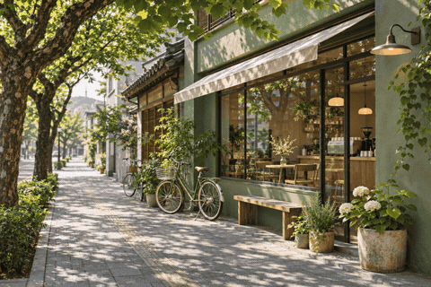
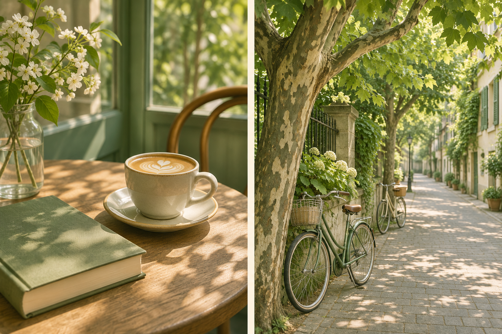

WEEKEND NOTES / 01
城市慢行手记
WALK SLOWLY, LIVE FULLY

虚构街景 · AI 生成示意
01 / 出门之前
周末早上，把闹钟关掉。等阳光落到窗边，再出门走走。
一杯咖啡，一段路。
A LITTLE TIME FOR YOURSELF

虚构场景 · AI 生成示意
02 / 街角停留
沿着熟悉的街道慢慢走，会遇见刚开门的咖啡店。点一杯喜欢的饮品，坐在窗边，看树影从桌面移到墙上。
周末的时间就这样展开。
A SMALL PAUSE
走累了便找个地方坐下，
翻几页书，也可以什么都不安排。
等风吹过街角，再决定下一站。
03 / 带走一点风景
把今天喜欢的风景拍下来。下一个周末，换一条路继续走。
本文为虚构生活方式示例，图片为 AI 生成示意，不对应真实店铺或地点。